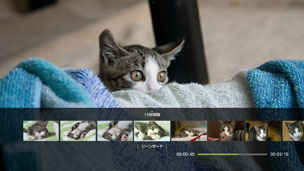
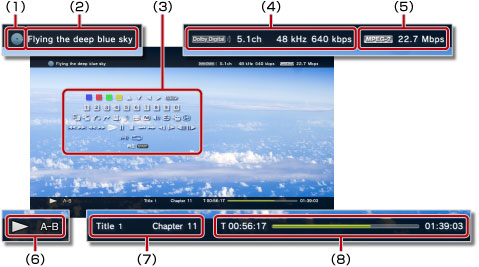

ビデオ > 操作パネルを使う
操作パネルを使う
画面上の操作パネルで、さまざまな操作ができます。操作パネルは、 ボタンで表示／非表示を切りかえられます。
ボタンで表示／非表示を切りかえられます。
このページで表示しているアイコンの意味は次のとおりです。
 |
読み出し専用のBlu-ray Disc（BD）に記録されたビデオ |
|---|---|
 |
書き換えが可能なBDに記録されたビデオ |
 |
AVCHDフォーマットで記録されたビデオ |
 |
|
 |
DVD-R / DVD-RWのVRモードで記録したビデオ |
 |
本体ストレージに保存された動画ファイル |
 |
記録メディアに保存された動画ファイル* |
| * |
お使いのPS3™によっては、記録メディアを使うときに別売りのUSBアダプターなどが必要になる場合があります。 |
|---|
重要
コンテンツによっては、制作者の意図により、あらかじめ再生状態が決められていることがあります。この場合、操作パネルの項目が一部機能しないことがあります。
青／赤／緑／黄

アイコンに対応した操作をします。再生するコンテンツによって、アイコンに割り当てられる機能は異なります。
上／下／左／右

項目を選ぶときに使います。
決定
選んだ項目を決定します。
数字キー

数字を入力するときに使います。
ポップアップメニュー
ポップアップメニューを表示します。
メニュー
メニューを表示します。
トップメニュー
トップメニューを表示します。
リターン
コンテンツで指定された場所に戻ります。
シーンサーチ


一定の間隔でサムネイルを表示して、見たいシーンを選んで再生します。

1. |
方向キー |
|---|

 でサムネイルを表示させる間隔を選ぶ。
でサムネイルを表示させる間隔を選ぶ。2. |
方向キー |
|---|

 で見たいシーンを選ぶ。
で見たいシーンを選ぶ。ヒント
- チャプターのない動画では、［チャプター］は選べません。
- 1分未満の動画ファイルはシーンサーチができません。
- 動画の種類によっては、シーンサーチができないことがあります。
- 選択されているサムネイルは、約15秒間プレビュー再生します。
ジャンプ
| Title X | タイトル番号を指定する |
|---|---|
| Chapter X | チャプター番号を指定する |
| XX:XX / XX:XX:XX | 時間を指定する |
ヒント
動画ファイルによっては、（ジャンプ）の操作はできません。
アングル切りかえ
同じ場面が複数の角度（アングル）から記録されているコンテンツのアングルを切りかえます。
音声切りかえ
字幕切りかえ

字幕が記録されているコンテンツの字幕言語を切りかえます。クローズドキャプションに対応したコンテンツの場合、クローズドキャプションを選べます。
ヒント
- クローズドキャプションを表示するには、
 （設定）＞
（設定）＞ （ビデオ設定）＞［クローズドキャプション］を［入］に設定する必要があります。
（ビデオ設定）＞［クローズドキャプション］を［入］に設定する必要があります。 - クローズドキャプションは北米地域で販売されているPS3™だけで選べる設定です。
字幕スタイル切りかえ
字幕が記録されているコンテンツの字幕の見えかたを切りかえます。
音量調整
 （ビデオ）で再生するコンテンツの音声出力レベルを設定します。9段階に調整できます。
（ビデオ）で再生するコンテンツの音声出力レベルを設定します。9段階に調整できます。
ヒント
- 音量出力レベルを上げすぎると音割れすることがあります。その場合は、音量出力レベルを下げてください。
- お使いのオーディオ機器や、出力する音声の種類によっては、設定が無効になることがあります。
映像音声設定
（ビデオ）で再生するコンテンツの出力に関する設定をします。再生するコンテンツによって、表示される項目は異なります。
| フレームノイズリダクション | 細かいノイズを低減する |
|---|---|
| ブロックノイズリダクション | 画面上にモザイクのように現れるブロックノイズを低減する |
| モスキートノイズリダクション | 映像の輪郭部分に発生するモスキートノイズ（ちらつき）を低減する |
| アップコンバート | アップコンバート出力の設定をする 設定した値は、 （設定）＞（ビデオ設定）＞［BD / DVD - アップコンバート］に反映されます。 |
| 映像出力フォーマット | 映像出力のフォーマットを設定する DVDやBDを再生するときの映像出力フォーマットを選べます。設定した値は、 （設定）＞（ビデオ設定）＞［BD / DVD - 映像出力フォーマット(HDMI)］に反映されます。 |
| Y Pb / Cb Pr / Crスーパーホワイト | スーパーホワイトの表示を設定する DVDやBD、AVCHDディスクを再生するときに、スーパーホワイトの信号を出力できるようになります。設定した値は、 （設定）＞ （ディスプレイ設定）＞［Y Pb / Cb Pr / Crスーパーホワイト（HDMI）］に反映されます。 （ディスプレイ設定）＞［Y Pb / Cb Pr / Crスーパーホワイト（HDMI）］に反映されます。 |
| RGBフルレンジ | RGBフルレンジの表示を設定する 設定した値は、 （設定）＞（ディスプレイ設定）＞［RGBフルレンジ］に反映されます。 |
| ダイナミックレンジコントロール | ダイナミックレンジコントロールの設定をする Dolbyの音声（Dolby Digital、Dolby Digital Plus、Dolby TrueHD）が記録されたDVDやBDを再生するときのダイナミックレンジコントロールの設定を選べます。設定した値は、 （設定）＞（ビデオ設定）＞［BD / DVD - ダイナミックレンジコントロール］に反映されます。 |
| 音声出力フォーマット | 音声出力のフォーマットを設定する DVDやBDを再生するときの音声出力フォーマットを選べます。設定した値は、 （設定）＞（ビデオ設定）＞［BD / DVD - 音声出力フォーマット(HDMI)］または［BD - 音声出力フォーマット(光デジタル)］に反映されます。 |
時間表示切りかえ
タイトルやチャプターの経過時間／残り時間の表示を切りかえます。再生するコンテンツによって、表示される内容は異なります。
画面モード
画面の表示を切りかえます。
| ノーマル | 画面サイズに合わせて表示する |
|---|---|
| ズーム | 縦横比は変えず、上下または左右をカットして、画面いっぱいに表示する |
| フル | 縦横比を変え、上下左右を引き伸ばして、画面いっぱいに表示する |
| オリジナル | 元の画像サイズのまま表示する |
ヒント
動画ファイルによっては、画面モードが切りかわらない場合があります。
アイコン変更
動画ファイルのアイコン（サムネイル）を変更します。動画ファイルを再生中に、アイコンにしたい場面で（アイコン変更）を選びます。
ヒント
- 動画ファイルによっては、アイコンの変更ができません。
- 2秒以下の動画ファイルはアイコンにできません。
削除
再生中の動画ファイルを削除します。
画面表示
再生中の状態／情報を表示します。再生するコンテンツによって、表示される内容は異なります。

(1) |
メディア |
|---|---|
(2) |
タイトル |
(3) |
操作パネル |
(4) |
サウンドコーデック／チャンネル数／周波数／ビットレート |
(5) |
映像コーデック／ビットレート |
(6) |
状態アイコン |
(7) |
タイトル／チャプター |
(8) |
経過時間／総時間 |
前（先頭）／次
ヒント
記録メディアや本体ストレージに保存された動画ファイルでは、（次）の操作はできません。また、 （前）を選ぶと動画ファイルの先頭に移動します。
（前）を選ぶと動画ファイルの先頭に移動します。
早戻し／早送り
早戻し／早送りをします。 ボタンを押すたびに、速さが切りかわります。
ボタンを押すたびに、速さが切りかわります。
ヒント
ワイヤレスコントローラのアナログスティックを使って、早戻し／早送りができます。右スティックの動かしかたによって、速さをコントロールします。Blu-ray 3D™ の映像を再生しているときは、右スティックを使った速さのコントロールはできません。
再生
ヒント
再生途中で止めた動画を次に再生するときは、通常、前回止めたところから始まります。 始めから再生するときは、PSボタンを押して再生を終了し、XMB™を表示します。アイコンを選んでボタンを押し、オプションメニューで［始めから再生］を選びます。
一時停止
停止
フラッシュ（-）／フラッシュ（+）
スロー（戻る）／スロー（進む）
コマ戻し／コマ送り
A-Bリピート
1. |
繰り返したい部分の始点で |
|---|---|
2. |
繰り返したい部分の終点で |
ヒント
A-Bリピートを解除するときは、（A-Bリピート）を選んでください。
リピート
ヒント
リピートを解除するときは、［リピート 切］と表示されるまで（リピート）を選んでください。